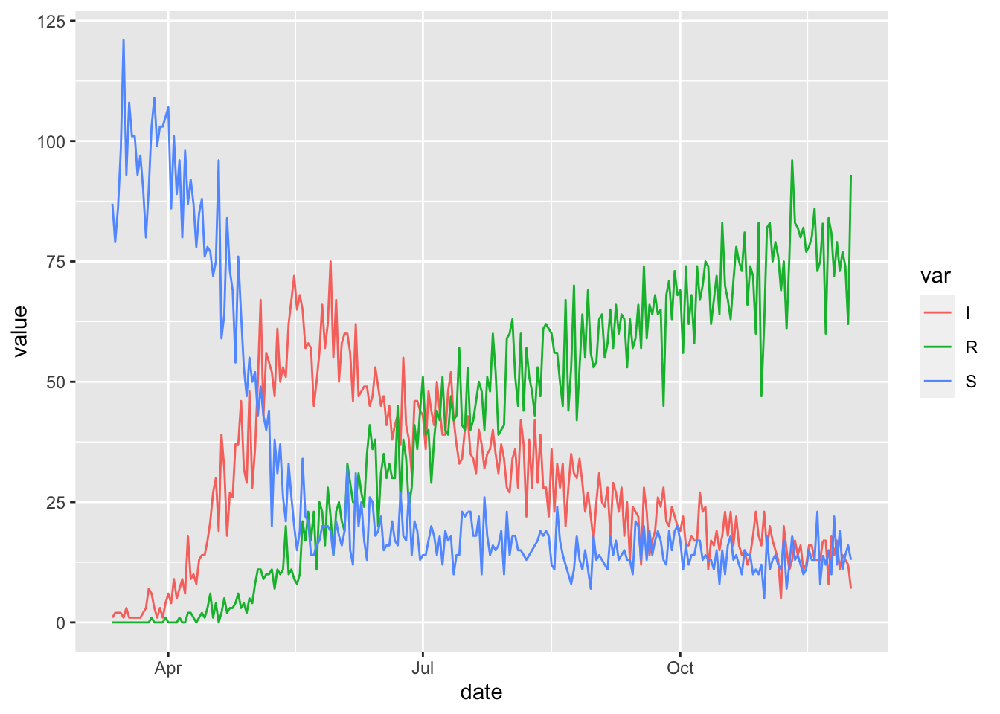

7 Time Varying Parameters
Any parameter in a McMasterPandemic model can be scheduled to vary in time.
In this example we create a time-variation schedule that causes the transmission, beta, drop to very low levels on May 15.
random_timevar = data.frame(
Date = ymd(20200515),
Symbol = 'beta',
Value = 0.01,
Type = 'abs'
)
random_timevar## Date Symbol Value Type
## 1 2020-05-15 beta 0.01 abssir_with_timevar = (sir
%>% update_piece_wise(random_timevar)
%>% update_error_dist(
S ~ poisson(),
I ~ poisson(),
R ~ poisson()
)
)timevar_sims = (sir_with_timevar
%>% simulation_history(include_initial_date = FALSE, obs_error = TRUE)
%>% tidyr::pivot_longer(-Date, names_to = "var")
%>% rename(date = Date)
%>% mutate(value = round(value))
%>% filter(var %in% c("S", "I", "R"))
)
(ggplot(timevar_sims)
+ geom_line(aes(date, value, colour = var))
)
Notice the abrupt break-point on May 15 that causes the numbers of infected individuals to decrease.
We can easily compare the parameters at the beginning of the simulation with parameters at the end of the simulation.
## beta gamma N
## 1e-01 1e-02 1e+02## beta gamma N
## 1e-02 1e-02 1e+02See [The SIRV model] and Covid SEIR for other examples of the use of time-varying parameters in simulation models.
There are a few places you can go from here:
- Keep reading to learn about the general Model of Piece-Wise Time-Variation that is used by McMasterPandemic
- Learn about Calibrating Time-Variation Schedules
- Learn how to forecast with time-variation schedules in order to explore what-if-scenarios
- Learn how to specify time-variation multipliers on the logit-scale for parameters that should be bound between zero and one
- TODO: Complex Time-Variation Schedules
- TODO: When log-linear models are developed there should be a pointer to their documentation here
7.1 Model of Piece-Wise Time-Variation
A time-variation schedule is a data frame with one row for each date on which each parameter changes its value. This data frame has four columns that can be used to define the characteristics of each break-point.
Date– Date on which a particular parameter changes its valueSymbol– String giving the symbol representing the changing parameterValue– The numeric value used to change the value of the parameter, the effect of which depends on the value of theTypecolumnType– One of the following strings:"abs"– TheValuecolumn is the new value for the parameter onDate"rel_orig"– TheValuecolumn is multiplied by the original value of the changing parameter at the beginning of the simulation, to generate a new value for the parameter onDate"rel_prev"– TheValuecolumn is multiplied by the previous value of the changing parameter, to generate a new value for the parameter onDate"rel_orig_logit"– TheValuecolumn is added to the logit transform of the original value, and then the inverse logit transform is applied to this sum to generate a new value for the parameter onDate"rel_prev_logit"– TheValuecolumn is added to the logit transform of the previous value of the changing parameter, and then the inverse logit transform is applied to this sum to generate a new value for the parameter onDate
Let \(\theta_t\) be the focal parameter at time \(t\), let \(\theta_0\) be the original value of \(\theta\) at the beginning of the simulation, let \(t = \tau\) be a time at which \(\theta\) changes value, and let \(\nu_\tau\) be the number in the Value column associated with the breakpoint at \(\tau\). The following table describes the different types of time variation.
| Time Variation Type | Parameter Update Expression |
|---|---|
abs |
\(\theta_\tau = \nu_\tau\) |
rel_orig |
\(\theta_\tau = \theta_0 \nu_\tau\) |
rel_prev |
\(\theta_\tau = \theta_{\tau-1} \nu_\tau\) |
rel_orig_logit |
\(\theta_\tau = \text{logit}^{-1}\left(\text{logit}(\theta_0) + \nu_\tau\right)\) |
rel_prev_logit |
\(\theta_\tau = \text{logit}^{-1}\left(\text{logit}(\theta_{\tau-1}) + \nu_\tau\right)\) |
Once a time-variation data frame is produced it can get added to a model when it is created via the params_timevar argument of flexmodel, or by updating an existing flexmodel object using the update_piece_wise function.
7.2 Calibrating Time-Variation Schedules
Entries in the Value column can be NA, indicating that these should be fitted using Calibration. When flagging time-variation values for calibration in this way, one must also provide information on any parameter transformations and prior distributions. Do provide this information, we use a technique similar to the one described in the Calibration chapter to specify transformations and prior distributions for parameters in the params element of flexmodel objects. In that chapter we used the add_opt_params function – here we use the add_opt_tv_params function (the tv stands for time-variation).
To illustrate calibration of time-variation values, we mark for calibration the break-point on May 15 in our example above.
Then we update our model with the sir_with_timevar simulations to fit to, and specify how to optimize the parameters.
sir_to_cal_tv = (sir_with_timevar
%>% update_observed(timevar_sims)
%>% update_piece_wise(calibrate_timevar)
%>% add_opt_params(log_beta ~ log_flat(-2))
%>% add_opt_tv_params(tv_type = "abs"
, log_beta ~ log_flat(-4)
)
)The key function here is add_opt_tv_params, which allows us to specify a flat prior on the log scale for fitting the time-variation values.
It turns out that in this case we need to make one technical adjustment – see Simulated time-series close to zero for an explanation.
With this sir_to_cal_tv object we can now fit this model to the simulated data.
The time-variation values before, during, and after optimization look as we would expect, given that we fitted to the same model that generated the data.
c(
before = pars_time_series(sir_with_timevar)$Value,
during = pars_time_series(sir_to_cal_tv) $Value,
after = pars_time_series(sir_cal_tv) $Value
)## before during after
## 0.010000000 1.000000000 0.009242963